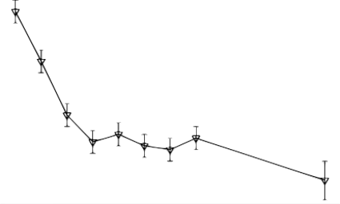
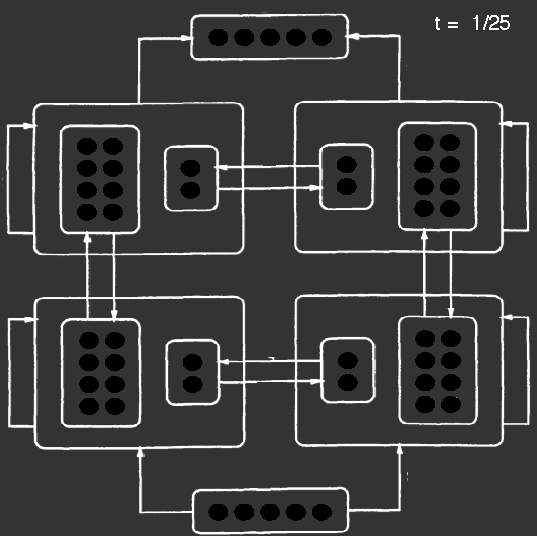
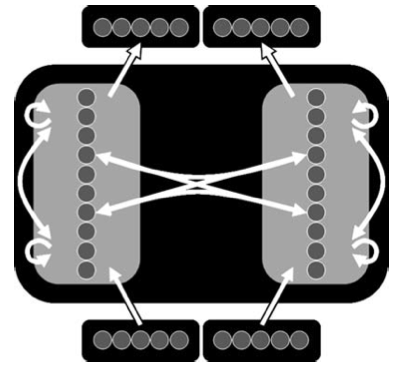
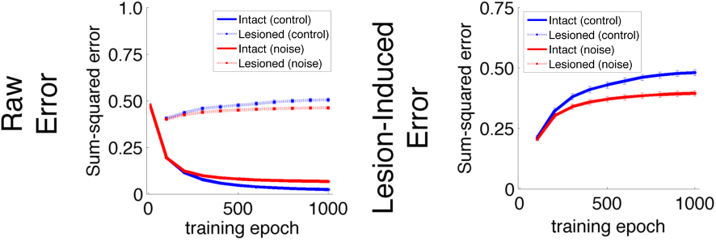
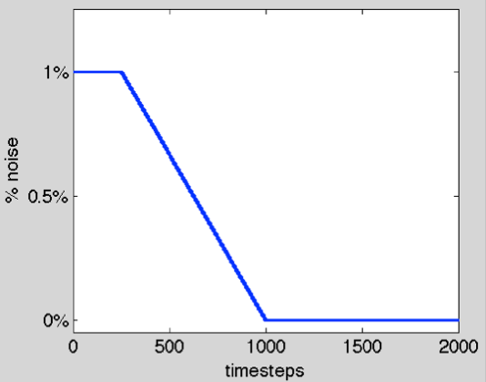
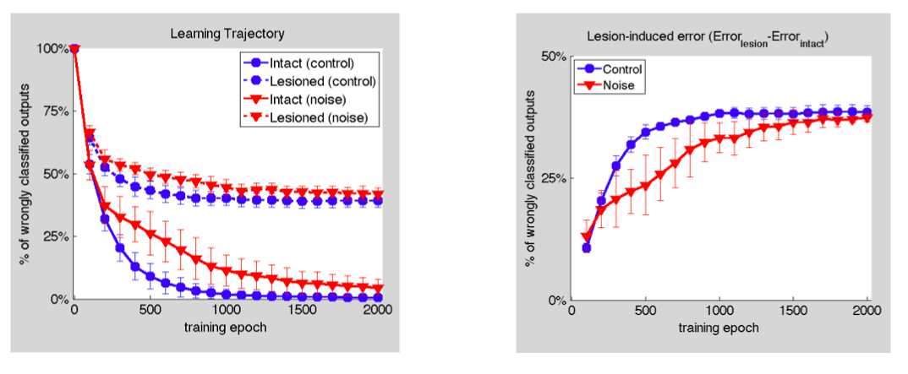
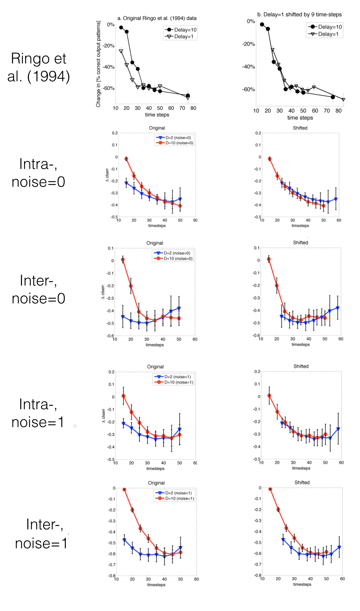

Adapted from Ringo et. al (1994)
Model:
- Model runs in time
- Each connection has a delay
- Interhemispheric: 1 or 10
- All others: 1
- Model runs for a fixed number of time steps.
- Model is trained on a paired associates task: given some input, produce the output.
Training & Analysis:
- Train network to 100% performance.
- Remove interhemispheric connections.
- Network with more error uses those connections more!
- Train models with many different total time steps
Model Results

Network run time
- Network with delay=10 (circles) has little error at early time steps, then drops off.
- Network with delay=1 (triangles) has error early, then drops off.
Ringo et al. (1994) and others take this as evidence of less interhemispheric communication, requiring "multiple passes" to overcome.
We know there will be an onset difference of 9 time-steps. What remains after we account for that?
shifted original

Original network

Network without interhemispheric connections
Prediction seems to matter.

Axon diameter distribution in the cat (post-natal day 150)
Adapted from Berbel & Innocenti (1988)
Adapted from Berbel & Innocenti (1988)
At birth, most axons are thin and unmyelinated (bottom plot).
- Axons with diameter < 0.5um have unreliable conduction delays, due to a number of noise sources (Faisal et al., 2008).
- Longer axons have more variability.
- Early in development, longer axons should have more variability.
- Over development, variability should decrease and disappear.
What is the effect of length-dependent delay variability
over development?
over development?

Same as Ringo model, but:
- "Split" inputs and outputs (for more nuanced testing)
- Interhemispheric delay is fixed at 10.
- Total number of time steps is fixed at 35.
- Noise is added such that interhemispheric connections have 1% noise.
Run three experiments:
- Expt 1: Show that, over model training ("development") with constant noise, that noise reduces long-distance communication.
- Expt 2: Show that, over model training ("development") with decreasing noise, that long-distance communication develops.
- Expt 3: Show that the reduction of communication is more than what is due to the onset delay.
Expt 1: Constant Noise

Over learning, the amount of lesion-induced error is less for the noise vs. no-noise
condition, suggesting a bias for local (intrahemispheric) circuits
over long-distance (interhemispheric) circuits.
Expt 2: Tapered Noise (simulating maturation)
|  |  |
| Noise reduces over training, roughly simulating axonal maturation. |
Over learning, the difference in lesion-induced error between noise
and no-noise conditions decreases, showing that an initial bias for
local (intrahemispheric) circuits disappears.
|
Expt 3: Analyzing communication

- intrahemispheric patterns: a hemisphere's output can be made from its own input.
- interhemispheric patterns: a hemisphere's output can be made only after knowing both hemisphere's inputs.
Results

There is an effect of delay onset for all conditions and patterns.
In the noise condition, the inter- patterns show an additional effect
of noise.